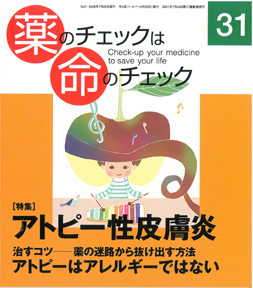

No.31 特集 アトピー性皮膚炎 2008年7月 発行
健診などでアトピー性皮膚炎と診断され、医者の言うとおりにステロイド外用剤を塗る。塗ってしばらくは「きれい」なのだが、塗るのを止めると湿疹はひどくなる。 薬を塗る。ステロイドが手放せなくなって迷路に入ってしまう。そこから抜け出すにはどうしたらいいのだろう？
（絶版）
もくじ
特集 アトピー性皮膚炎
■ 子どものアトピー十人十色−患者に聞く−編集部
■ 脱「ステロイド剤」・脱「保湿剤」−専門医・佐藤健二さんに聞く
自宅でステロイド・保湿剤を減らす方法
■ わが家はまだ臨戦態勢です−安藤直子・聡彦さんに聞く−編集部
■ ステロイド離脱12年後の落とし穴−感染症にご注意！−松本直子
■ 対策は「何もしない」−患者の知恵袋 −西村久美子
■「アトピービジネス論」の無責任 −住吉純子
■ 私が脱「ステロイド療法」から離れた理由 −深谷元継
■ アトピー性皮膚炎成人患者の実態は？ −安藤直子
■ アトピー治療の薬剤評価 −浜六郎
■ アトピー治療の薬剤リスト −浜六郎
■ ステロイド外用剤の強弱と皮膚の吸収度
■ 子どもがアトピーと診断されたときの10か条
■ 相談と受診のための医療機関リスト
■ アトピーはアレルギーではない −浜六郎
ステロイド関連
■ 前号特集「喘息」へのＱ＆Ａ 読者との往復書簡−本沢龍生／浜六郎
■ 小児喘息の治療ガイドラインは適切か？ 喘息特集への私見−相澤扶美子
提言
■ 国は、因果関係の認定方法を根本的に見直すべき −浜六郎
連載
■ ＥＢＭ超入門（17）DIPExによる質的研究･肺がん患者へのインタビューから−別府宏圀
■ みんなのやさしい生命倫理（31） 生老病死（１） −谷田憲俊
その他
■ コーヒー無礼区
■ 行ってきました ハンセン病療養所の社会化を目指して
■ 奈良県大淀町立病院母体死亡事件・裁判傍聴記２
■ 海外情報：コレステロール低下剤で何かいいことあるの？
■ 質問箱 牛乳はよくないのでは？
■ 読者の声とイベント
■ 書評『ちーちゃん誕生死・10日間の思い出』／『花粉症は環境問題である』
■ 用語の解説
「専門医に聞く」より
脱「ステロイド」剤・脱「保湿剤」
アトピー性皮膚炎でステロイド治療を受けていた患者が脱ステロイドを望む場合に、適切な指導を受けたり、入院できる医療機関は非常に数少ないのが現状です。皮膚科医の佐藤健二さん（前・近畿中央病院皮膚科部長、現・阪南中央病院皮膚科部長）は、多くの「アトピー性皮膚炎」患者の脱ステロイド・脱保湿治療に取り組んでこられました。アトピー性皮膚炎治療のいわゆる「常識」とはほとんど逆を行く、目からウロコの話を伺いました。 （以下、引用省略）
詳しくは本誌で。
（絶版）